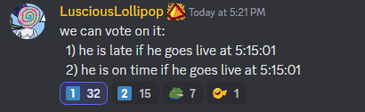
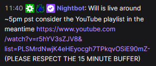

- Why is a stream starting at 5:15:01 considered late?
- The chatters union put it to a vote. The response was conclusively that the 15 minute buffer ends at 5:15:00PM
- 
- Why a fifteen minute buffer?
- The !will command contains the line "(PLEASE RESPECT THE 15 MINUTE BUFFER)"
- 
- What happens if the stream crashes and restarts?
- It takes the earliest livestream on a given day and determines if it started early, late, or on-time. So crashes should not be an issue.
- Why?
- No clue. Boredom mostly.